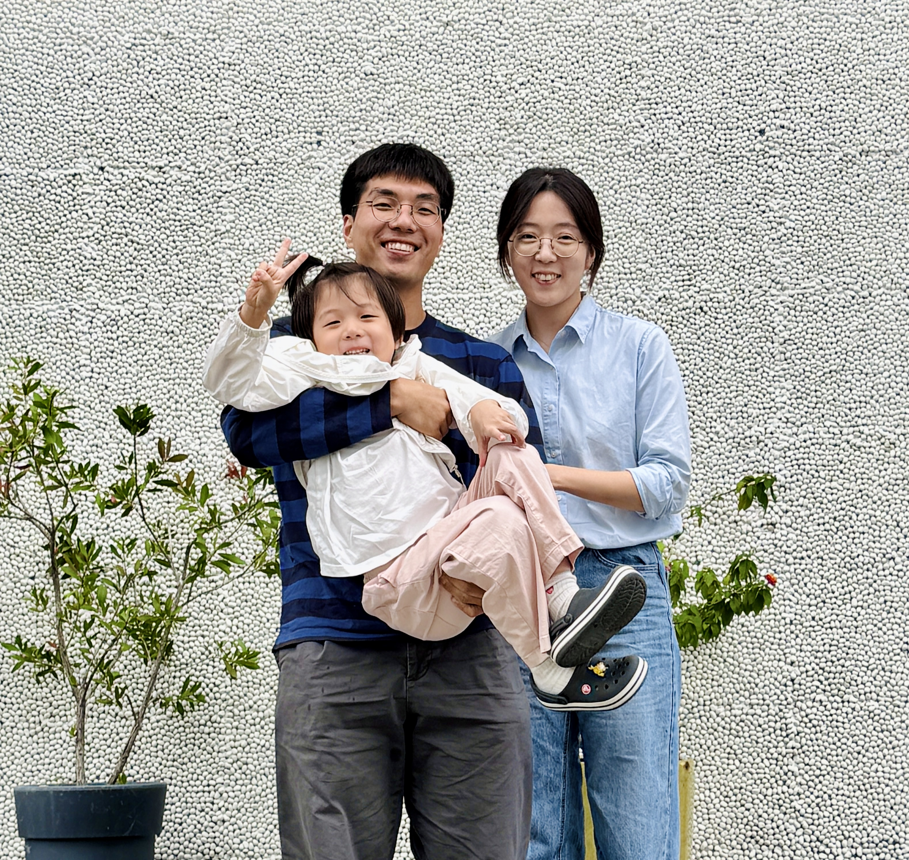
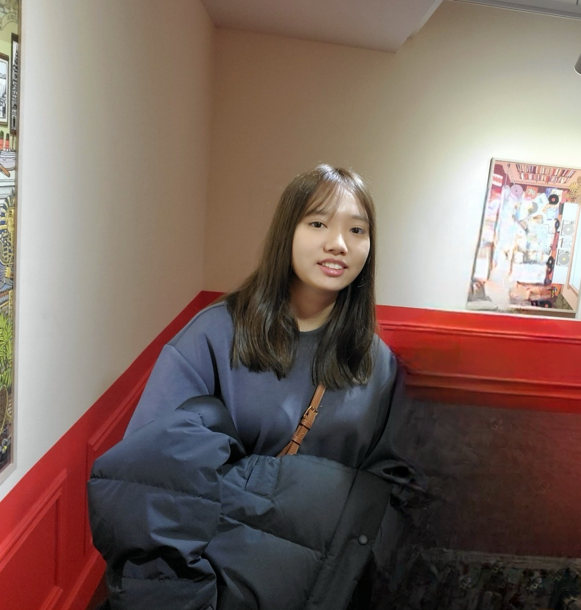
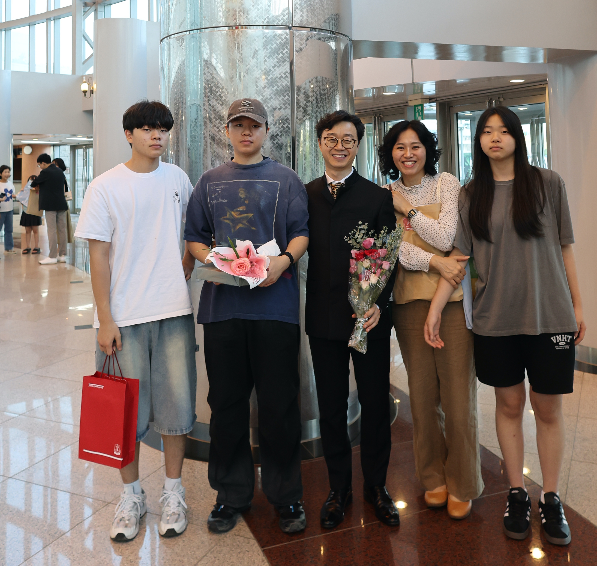
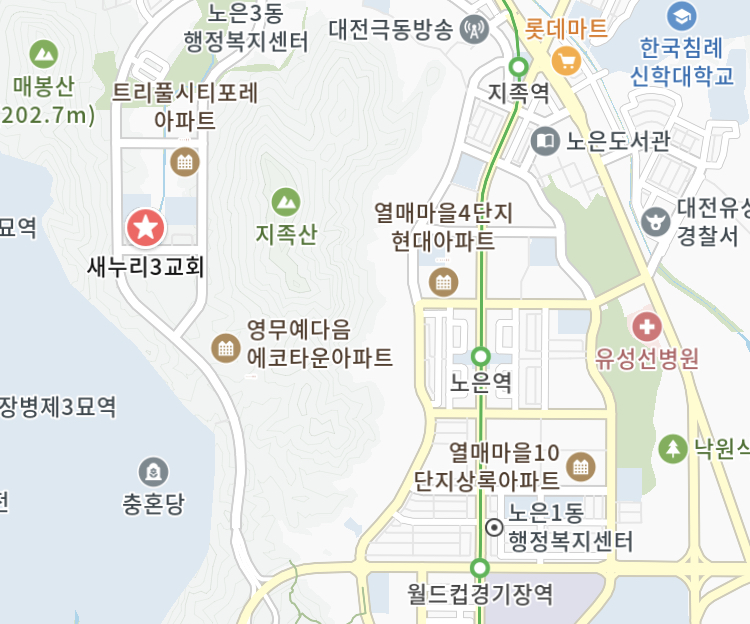

주보 2026-03-01
주후 2026년 3월 1일 _ 제14권 9호
교회설립연도 : 2013년
착한 양⦁착한 목자⦁착한 공동체
다음세대를 세우고 지역사회를 섬기는 교회
기독교한국침례회 새누리3교회
대전광역시 유성구 지족로148번길 5-25 리치프라자 1층
https://saenuree3.oopy.io
Tel. 042-826-0699 Fax. 042-826-0698
공동 기도 제목
❶
오늘 우리가
예배하고자 하는 하나님이
어떤 분이신지 고백하고,
우리는 하나님께
어떤 존재인지를 고백하는 기도를 드리겠습니다.
❷
오늘 우리의
예배를 통해
하나님의 은혜와
사랑을 경험하고,
한 주간의 삶을
하나님의 영광을 위해
살아가는 생명력을
공급받는 예배로
이끌어주시길
기도하겠습니다.
✳ 교회 계좌 ✳
우리은행 1005-403-007282
새누리3교회
예 배
주일 1부 예배
오전 09시 30분
주일 2부 예배
(Youtube 동시 중계)
오전 11시 30분
인도 : 임진산 목사
예배준비
예배를 위한 기도
(공동기도제목)
다 같 이
기 도
주 기 도 문
다같이
교 제
성 도 의 교 제
다같이
찬 양
경 배 와 찬 양
다같이
기 도
대 표 기 도
1부
김성환
2부
김선향
말 씀
그리스도에 이르기까지 자라가기
그리스도를 닮아가기 (1)
임진산목사
묵상
마음으로 드리는 예배
다같이
찬양
결 단 찬 양
다같이
축 도
헌금기도 및 축도
임진산목사
광 고
교 회 소 식
임진산목사
⦁예배 중 휴대폰은 꺼두시기 바랍니다.
⦁헌금함은 예배실 출입문 옆에 비치되어 있습니다.
⦁헌금은 들어오실 때 각자 헌금함에 넣어 주시길 바랍니다.
다음 주일 봉사자
대 표 기 도
1부
한지훈
2부
김선미
봉 사 목 장
(식사⦁청소)
더불어 목장
설교 노트
그리스도에 이르기까지 자라가기 | 그리스도를 닮아가기 (1) | 임진산 목사
⚫서 론
삶의 목표가 무엇입니까?
마태복음 5장 48절, 에베소서 5장 1절, 골로새서 3장 10절
⚫전환문
우리의 모범 되신 예수님 따라가기
⚫본 론
1. 예수님의 성장
누가복음 2장 52절
2. 우리의 성장
1) 성장 목표
에베소서 4장 13절
2) 성장의 내용
에베소서 4장 13절
3) 성장하는 방법
에베소서 4장 13절
⚫결 론
나이테를 보며 드는 생각
삶으로 말씀 읽기
그리스도에 이르기까지 자라가기 | 그리스도를 닮아가기 (1) | 임진산 목사
1. 예수님을 닮는다는 표현은 나의 상황에서 어떻게 느껴지는가?
2. 예수님의 성장이 우리의 성장의 모범이 된다는 것은 어떤 도전이 되는가?
3. 우리의 성장에서 당신은 어떤 변화가 필요하다고 생각하는가?
저녁기도회 본문⦁기도제목
구분
월(3.2)
화(3.3)
수(3.4)
목(3.5)
금(3.6)
토(3.7)
주(3.8)
본문
요한복음
9장
13-23절
요한복음
9장
24-41절
요한복음
10장
1-21절
요한복음
10장
22-42절
요한복음
11장
1-16절
요한복음
11장
17-27절
요한복음
11장
28-37절
인도자
가정별
조용석
가정별
임진산
한연경
가정별
가정별
2026 목장 교회
마을
목 장
재 적
장 소
목장소식 및 기도제목
목 자
참 석
노
은
•
반
석
•
신
성
마
을
동행
윤장우
노재숙
10+5
6+1
목자가정
윤장우/노재숙: 목자가 성장함으로 목원들의 성장을 지지할 수 있길
유병진/김지영: 가정과 신앙의 회복, 성령님의 도우심을 믿음으로 순종
정주현/한지수: 유담이가 잘 크기를 바람, 하나님을 찾는 개인의 시간을 회복하길. 체력확보하도록
윤재호: 하나님 나라를 확장하는 삶 되길. 열매를 많이 맺기를
이은지: 호산이 진학 앞두고 이사 고민 중, 먼저 하나님 안에서 말씀과 기도 회복하길
백서영: 개강을 앞두고 무기력과 회의주의, 냉소를 뿌리치길. 최선을 다해 가르치는 것에서 보람을 찾길. 영진이의 마음을 만져주시길
이창선: 새로운 일 시작, 지치지 않게
이레
김기창
유찬양
9+6
5+5
교회
목장: 새로운 목장에서 서로를 잘 알아가도록
열린 마음으로 서로를 대하게 하시며 함께 하나님 나라를 이뤄가도록
탄소 금식을 통해 절제를 배우게 하시고, 구제하는 일에도 힘쓸수 있도록
조이플
김진수
이미화
9+3
6
목자가정
1. 목원들 영육간의 건강할 수 있도록
2. 말씀과 기도의 특권을 사용하여 하나님 나라 백성으로 잘 살아낼 수 있도록
3. 달라지는 근무환경을 잘 감당하고 자녀들이 새학년을 잘 출발 할 수 있도록
푸른
김진태
김선미
10+2
5
목자가정
목장: 진실하고 화목한 목장으로 목자와 목원들이 함께 잘 세워갈 수 있도록
김진태: 회사 경영가운데 하나님의 인도와 일하심을 경험할 수 있도록, 어려움을 잘
돌파할 수 있는 지혜가 있기를
정경섭/이가영: 은총이 외삼중학교 진학 후 잘 적응하고 좋은 친구들 만나도록
한재호/임효정: 하나님 안에서 풍성한 삶을 누리는 가정 되도록
세
종
마
을
새빛
안치현
김숙희
9+6
8+6
교회
목장: 서로를 알아가며 진실한 공동체를 이루어 갈 수 있도록
주영: 사춘기 아이들과 원활히 소통할 수 있는 넓은 마음을 가진 엄마가 되길, 새학 분주함과 불안한 시기에 사업에 마음이 휘둘리지 않고 주님 안에서 평안을 누리길
박안연: 제 마음과 생각이 아닌 모든 것보다 강하신 주님의 팔을 의지하며 살아가길
전충희: 새로 함께하게 된 직원과 협력하여 사업장이 잘 운영될 수 있도록
이세담: 마무리 잘하고 새로운 근무지에서 안전하게 잘 적응할 수 있도록
이다희: 교통사고 후유증 없이 회복될 수 있도록
김민지: 자녀들이 준비해 온 과정과 시간이 좋은 결과로 이어질 수 있도록
샬롬
남현정
9+5
8+5
목자학원
공동: 사순절 탄소금식을 위해 결심한것들을 목장식구들이 잘 감당하기를
천명선: 2달간의 미국연수를 건강하게잘 다녀올수 있기를
박성희/장진호: 박성희자매님 어머님의 건강이 잘 관리되길
남현정: 하은이가 첫직장에 잘 적응하기를
홍택수/송현아: 택수형제님이 서울로 발령이났는데 잘 적응하고 좋은 만남이 있기를
조길환/김미정: 길환형제님 아버님과 일주일간 좋은 시간을 보낼수 있도록
김난해: 어려움을 겪는 학원아이들의 가정을 위하여
학
하
•
도
안
•
관
저
마
을
더불어
박종연
김윤희
10+10
4+6
교회
- 서성민 목사님 가정의 분립개척 과정에 다양한 방법으로 함께하는 마음들을 위해
- 목장 안에서의 나눔과 각자의 영적 성장을 위해
- 자녀들의 새학기 출발을 위해
갈렙
안혜경
8
7
교회
공동 기도제목:
1. 먼저 하나님의 나라와 의를 구하고 경험하는 한 주로 인도해 주시길
2. 예수님의 행하심을 깊이 묵상하는 고난 주간 되길
3. 채찍에 맞음으로 우리에게 나음을 주신 은혜가 경험되길.
쉼표
김성환
임정현
8+6
2+3
목자가정
김성환/임정현: 산이네 농부밥상을 향하여
유한호/임에스더: (임에스더) 풍삶기 통한 신앙 재정립 / (유한호) 건강
성규상/배지나: 지나자매 건강, 선율이 무럭무럭 자라길
조요셉/박지혜: 지혜자매 건강, 이도 무럭무럭 자라길
이든
송민섭
문은주
8
8
교회
조장식: 말씀을 통해 하나님을 알아갈 수 있기를
전정임: 신장 투석이 잘 진행되는 등 건강을 잘 유지할 수 있기를
신현철: 가족이 모두 강건하기를
한지훈: 3,1절 행사 잘 마무리 되길, 우주가 새로운 교회를 찾아 잘 정착할 수 있기를
송민섭/문은주: 마무리 잘하고 새로운 근무지에서 안전하게 잘 적응할 수 있도록
이음
정군옥
박상미
8+9
6
목자가정
정군옥/박상미: 부모님의 건강과 주거문제
조용석/신찬미: 부모님과 하늘이가 건강하도록, 찾는이에게 하나님 나라를 보여주는 가정이 되도록
청년
조용석
신찬미
15
1. 서로를 용납하고 책임지는 사랑으로 진실한 공동체를 이뤄가도록
2. 요한과 함께 예수 찾기에 참여하는 청년들이 예수님을 깊이 알아가고 닮아가도록
3. 새학기에 잘 적응하고, 학교생활에서 하나님나라의 가치를 따르도록
교육부서 소식
부 서
교역자
부서소식 및 기도제목
부 장
유아유치부
한연경
1. 예배를 기뻐하고 예수님을 사랑하는 아이들이 되도록
2. 예배를 통해 하나님사랑 이웃사랑을 알아가는 아이들이 되도록
3. 교사들에게 새힘과 은혜 주시도록
최지현
초등부
조용석
1. 하나님과 공동체를 깊이 사랑하는 예배가 되도록
2. 교사와 부모에게 은혜를 베푸셔서 다음세대를 하나님의 사람으로 잘 세워가도록
3. 새학기에 잘 적응하며, 학교생활에서 하나님나라의 가치를 따르도록
안치현
청소년부
임진산
1. 청소년부에 새롭게 오시는 이현용 전도사님이 교회에 잘 적응하고 청소년부를 잘 이끌어갈 수 있도록
2. 주일예배와 목장모임이 조화를 잘 이루어져 청소년들의 신앙이 자라갈 수 있도록
이예라
협력단체 및 선교지
단 체
선 교
가울(자립준비청년) 러브더월드(미혼모사역)
새물결플러스, 뉴스앤조이, 하나복 DNA 동역교회
한대희/잔트(캄보디아), 문창화/정계연(몽골)
이상구/김신아(필리핀), 한믿음/김사랑(N국)
송기훈/전종미(캄보디아)
새가족을 소개합니다
윤재호/이은지(호산)
이익원/주영(온유,평화,믿음)
김한별
박영의(시온,영광,빛나)
풍성한 삶 시리즈 진행
풍성한 삶으로의 초대
풍성한 삶의 첫걸음
풍성한 삶의 기초
유진주(한연경), 박영의(임진산)
배나영(한연경), 유병진(김진수), 김예온(조용석)
칼 럼
2026 봄 목자대학 안내
기도를 배우는 중입니다.
‘기도를 배우는 중입니다’는 책을 읽고 책 내용을 나누고,
주기도문을 따라 기도문을 작성해 봄으로 실제적인 기도에 대한 훈련을 하는 과목입니다.
아울러 영성의 기초에 대한 여섯 번의 강의를 통해 영성에 대한 바른 이해를 도모합니다.
‘기도를 배우는 중입니다’는 하나복 영성훈련의 첫 단계입니다.
렉시오디비나
하나님의 말씀을 침묵 가운데 묵상하고 기도하며 자신을 알아가고 하나님과 친밀한 교제를 누리도록 안내합니다. (묵상의 방법, 영적여정에 대한 안내, 영적치유와 성장 등)
총체적 삶의 공동체
공동체란 말은 두 가지 감정을 갖게 만듭니다. 하나는 ‘갈망’이고 또 하나는 ‘두려움’입니다. 공동체가 아닌 교회는 없습니다. 그러나 성경이 말하는 진짜 공동체로 살고 있는지를 우리 자신에게 물어볼 수 있는 좋은 기회가 될 겁니다.
레위기
구약성경에서 가장 중요한 성경은 무엇일까요? 구조상으로 보면 가장 중요한 성경은 ‘레위기’입니다. 그러나 ‘레위기’는 가장 알려지지 않는 성경입니다. 레위기에 대해서 함께 공부하면서 하나님나라의 가장 귀중한 원리가 무엇인지 깊이 나누는 시간이 될 겁니다.
요한과 함께 예수 찾기
‘요한과 함께 예수 찾기’는 강의와 성경 본문을 통해 예수님을 깊이 묵상해보는 31간의 프로그램으로 구성되어 있습니다. 책을 통해 개인적으로 예수님을 묵상하고, 함께 모여서는 묵상한 내용과 질문을 편하게 나누는 과목입니다. 사순절 기간에 예수님을 깊이 묵상하는 좋은 시간이 될 겁니다.
엄마 먼저
휴대전화 충전하듯이 매일매일 하나님께 마음을 연결하고
엄마가 먼저 하나님의 사랑을 채움 받으며, 그 사랑으로 자녀와 이웃을 사랑하는 법을 배우고 그룹원들과 함께 연습하는 시간입니다. - 책 ‘엄마먼저’ (신소영 저)
예배출석현황⦁헌금현황 (지난 주)
예
배
청장년
영아
유아유치
초등
청소년
방문
주일합계
저녁기도
93
6
22
19
140
48
헌
금
십일조
주일
감사
선교
지정
지정
공간
계
공간대책비축금
3,734,000
121,000
241,000
210,000
1,050,000
5,356,000
112,511,789
교회 소식
◉ 알림 및 모임
◉ 목회자 소식
전도사 부임
청소년부, 찬양팀 - 이현용 전도사
유성지방회 목회자 부부 여행
장소 : 제주도
일정 : 3월 9-12일(3박 4일)
참여 : 임진산, 한연경 목사
◉ 성도 소식
출산 축하
조이도, 조요셉/박지혜 부부, 둘째
성선율, 성규상/배지나 부부 둘째
김다움, 김산/오하라 부부 첫째
조이(태명), 허재경/윤수영 부부, 둘째
환우
배지나, 박복남(추청옥 자매 모친), 전정임, 이진철
분립개척 인큐베이팅 (3월)
대상 : 분립개척에 몸으로 참여자
장소 : 본당. 소그룹실
분립개척을 위한 월 후원약정 안내
아래 계좌로 후원해주시면 되겠습니다. 후원계좌는 교회설립 후 법인계좌로 변경될 예정입니다. (3333-36-5471635 카카오뱅크, 서성민)
봄 목자대학 안내
- 목자대학 과목소개가 칼럼란에 있습니다.
- 신청서가 출입구 테이블에 있습니다. 참여하기를
희망하시는 과목에 체크하셔서 헌금함에
넣어주시기 바랍니다.
부활절 연합 성가대원 모집
4월 5일 부활절 연합예배 성가대로 참여하기
원하시는 분은 한연경 목사에게 신청해 주시기
바랍니다.
◉ 함께살기
계산동 함께살기 두 번째 하우스에는 현재 투룸 2개가 남아있습니다. 함께살기에 관심 있는 분은 김성환 형제에게 문의하시기 바랍니다.
- 김성환 : 010-5872-7895
형제교회 소식
새누리교회
새누리2교회
1. 예배안내
- 3월 1일(오늘) 2부예배는 온세대예배로 드립니다.
- 3월 2일(월) 새벽기도회는 자율로 진행합니다.
2. 2026년도 실행위원회 위원을 모집합니다.
- 모집기한: 3월 8일(주일)까지
3. 2026 봄학기 목자대학 신청
- 개강: 3월 8일(주일) / 신청서를 제출해 주시기 바랍니다.
4. 모임안내
- 목자회: 3월 4일(수) 수요저녁예배 이후 / 4층 소예배실
- 선교위원회: 3월 8일(주) 오후 1시 / 1층 소모임실
- 교육위원회: 3월 15일(주) 오후 1시 / 4층 소예배실
1. 중보기도 헌신자 서약식: 중보기도 헌신자 서약 및 중보기도 카드 작성이 있습니다.
2. 성도총회 (2부 예배 후)
3. 목자임명식 및 목장분가식 (3월 8일(주) 2부 예배 후)
4. 2026년 상반기 목자대학
5. 어와나 참가신청 (대상: 7세~초 6학년)
개강: 3/11(수), 신청기간: 2/22(주일)~3/1(주일)
6. 목장 개학 및 식당 재개 (3월 8일(주)부터)
7. 금요 중보기도 재개 (3월 6일(금)부터)
예배 안내
찾아오시는 길
예배／모임
시 간
장 소
주일예배
주일 1부
09:30
본당
주일 2부
11:30
유아유치부
주일
11:30
유치부실
초등부
주일
11:30
초등부실
청소년부
주일
11:30
본당
⦁ 자동차
1) 구암역 → 유성IC사거리 → 대전현충원 방향 좌회전 →
노은3지구 방향 오른쪽 진입 → 도리미삼거리 우회전 →
파리바게트 좌회전
2) 반석역 → 통미삼거리에서 현충원/지족동로 방면 좌회전 →
지족로 148번길 방향 우회전 → 파리바게트 우회전
⦁ 대중교통
1) 반석역 하차 → 반석초등학교 114번 승차 →
노은휴먼시아4단지 하차 → 도보 120m
2) 월드컵경기장역 3번출구 → 1002번 승차 →
노은휴먼시아4단지 하차 → 도보 120m
13:30
새미래영수학원
청년부
주일
11:30
본당
13:30
새미래영수학원
수요성경공부
수요일
19:30
교회
Zoom
월, 화, 목, 금
21:30
저녁기도회
Zoom
교회 소개
새누리3교회는 2013년 9월 새누리2교회로부터 분립 개척된 건강한 교회입니다.
“착한 양, 착한 목자, 착한 공동체” 정신으로 다음 세대를 세우고, 지역사회를 섬기기 위해 개척되었습니다.
2013년 도안동에 개척되었다가, 2022년 지족동으로 이전해서
자립준비청년을 돌보는 단체 ‘가울’과 협력하여 공간을 공유하고 있습니다.
새누리3교회는 ‘하나복 DNA’ 단체와 협력하여 풍성한 삶 시리즈를 통해 균형잡힌 성장을 이루고,
진실한 공동체를 통해 가족됨을 누리며, 창조적 생각을 공유하여 안팎의 변화를 꿈꾸는 교회입니다.
우리는 예수그리스도가 다시 오실 때 완성될 하나님의 나라를 기다리며
지금 우리가 있는 자리에서 하나님의 나라를 이뤄가는 교회입니다.
새누리3교회에 오신 것을 환영합니다.
섬기는 분들
⦁ 교회의 머리 예수 그리스도 ⦁ 사역자 모든 성도
⦁ 대표목사 임진산 ⦁ 목사 한연경 ⦁ 전도사 조용석, 이현용 ⦁ 간사 김영수
기독교한국침례회 새누리3교회
대전광역시 유성구 지족로148번길 5-25 리치프라자 1층
https://saenuree3.oopy.io
Tel. 042-826-0699 Fax. 042-826-0698
Images (extracted from BinData)





